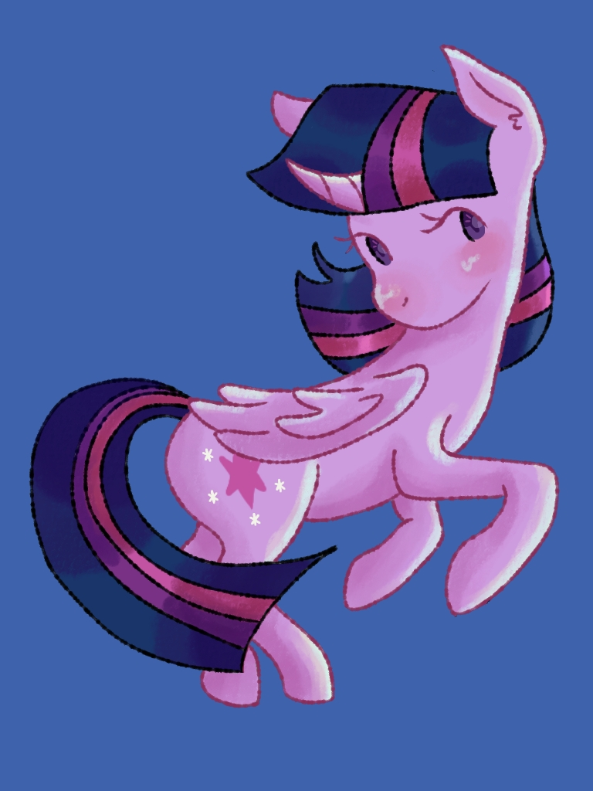
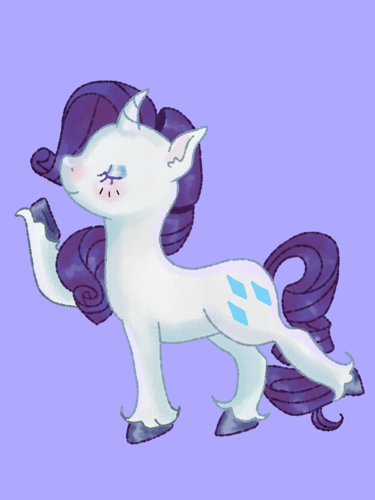
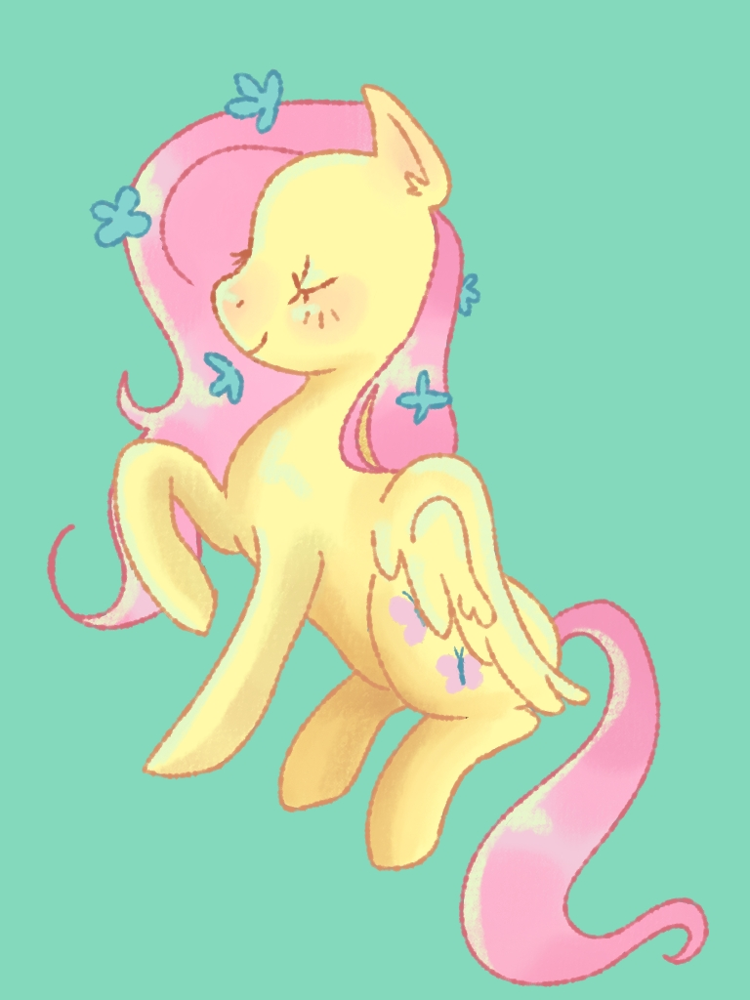
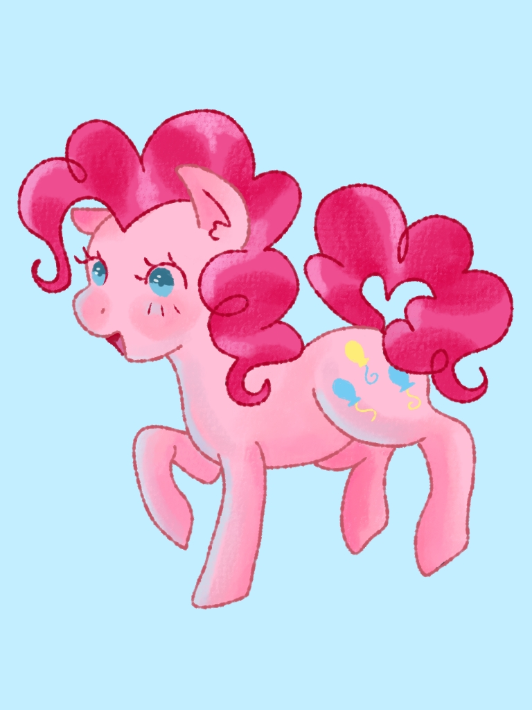
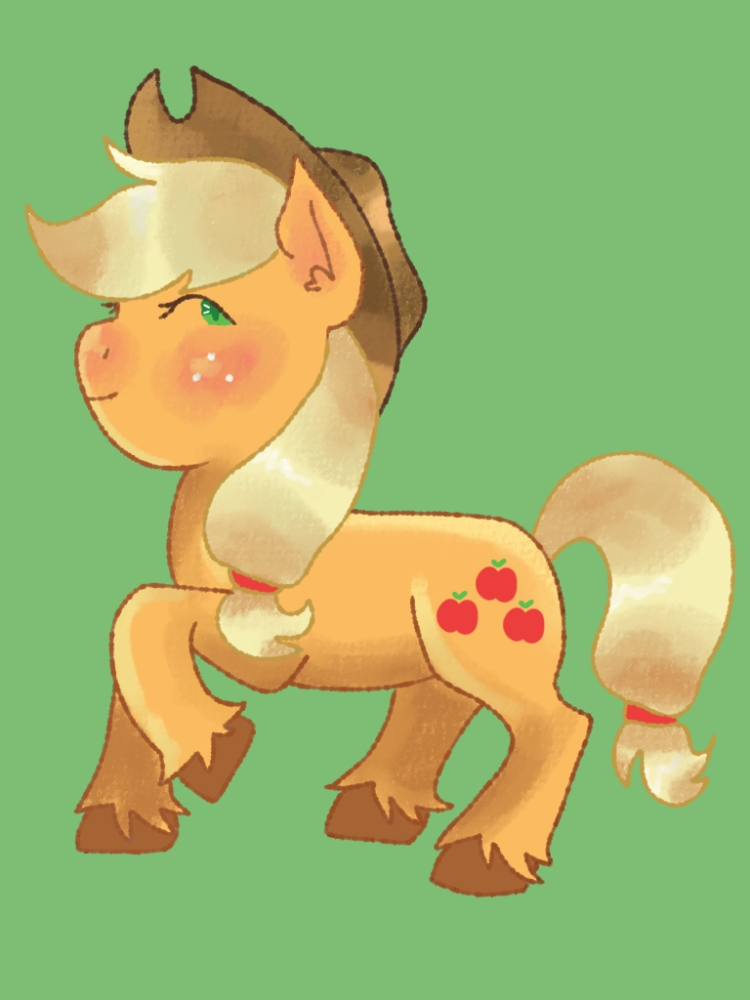
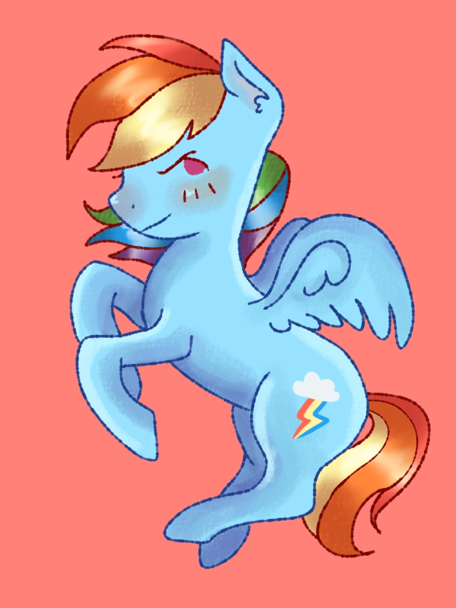
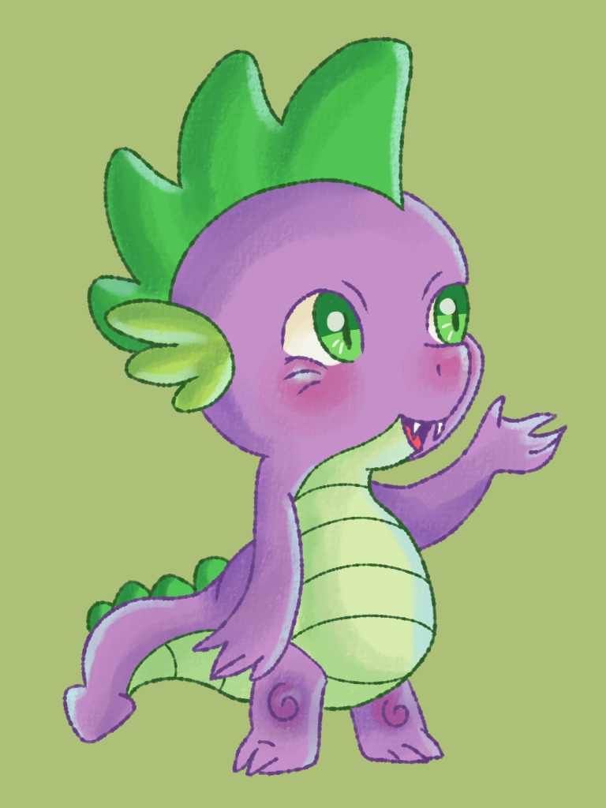

La serie cuenta con 6 personajes principales, que coloquialmente se les conoce como "Mane Six" Ellas son:
Twilight Sparkle
Apple Jack
Pinkie Pie
Rarity
Flutter Shy
Rainbow Dash






Dibujante: Krista Luna
Personajes Secundarios
Hay demasiades personajes secundarios y terciarios en la serie, asi como antagonistas, pero los personajes que mas destacan son:
Spike
Apple Bloom
Sweetie Bell
Scootaloo

Dibujo Spike. Dibujante: Krista Luna
Mis Personajes Favoritos
Top Ponis que se carrean la serie
Twilight Sparkle
Flutter Shy
Rarity
"Sin importar donde vayas en la vida, jamás debes olvidar el resultado de tu hogar y tus amigos
Y es algo para enorgullecerse siempre pase lo que pase."
¿Representan amistad?
Aqui pondre a la unica Poni que considero NO es tan buena amiga y el porque
RAINBOW DASH
Rainbow, a pesar de que en ciertos capitulos si demuestra ser leal y tiene preocupacion hacia sus amigas, en la mayoria de las veces suele ser poco humilde y siempre se burla de sus amigas, denigrandolas por sus gustoso o sus miedos haciendolas de menos. Podria seguir dando mas ejemplos, pero quiero mantenerlo corto.